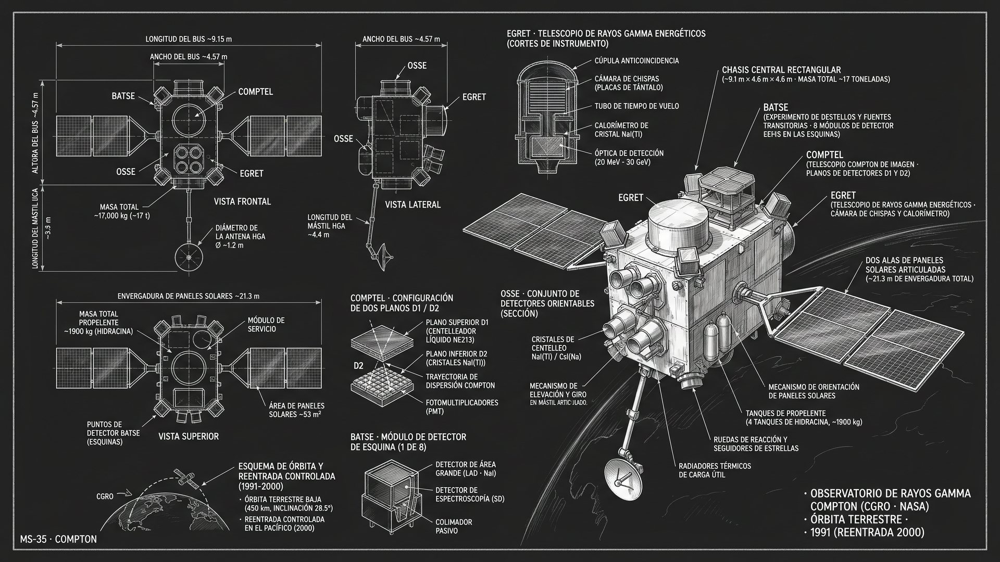

Compton Gamma Ray Observatory (CGRO)

Pesaba 16 toneladas y fue el mayor observatorio astrofísico lanzado hasta 1999. Barró el cielo en rayos gamma, demostró que los estallidos vienen de otras galaxias y acabó hundido en el Pacífico.
El fallo del tercer giroscopio en diciembre de 1999 llevó a una reentrada controlada: cuatro encendidos de frenado y destrucción sobre el Pacífico el 4 de junio de 2000, con restos a 3.862 km al sureste de Hawái. Personas: Neil Gehrels, Gerald Fishman, Carl Fichtel, James Kurfess
Lo que hizo
- Cuatro instrumentos — Llevaba BATSE, OSSE, COMPTEL y EGRET, que juntos cubrían de 20.000 eV a 30 GeV, con más de diez veces la sensibilidad de las misiones anteriores.
- El cielo que cambió — Hice el primer sondeo de todo el cielo en rayos gamma y aparecieron cientos de fuentes nuevas: el cielo gamma resultó mucho más dinámico y variado de lo que se esperaba.
- Sin giroscopio — Un giroscopio empezó a fallar en abril de 1999 y se perdió en diciembre, y eso precipitó el fin de la misión: cuatro encendidos de frenado y una reentrada controlada sobre el Pacífico.
Modelo 3D, chat y cómic, en tres idiomas
Fuentes
- science.nasa.gov/mission/cgro/
- www.nasa.gov/universe/nasa-celebrates-25-years-of-breakthrough-gamma-ray-science/
- heasarc.gsfc.nasa.gov/docs/cgro/deorbit/return.html
Ver el índice completo · Proyecto del NASA Space Apps Challenge 2026. Contenido con fuentes citadas.